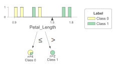
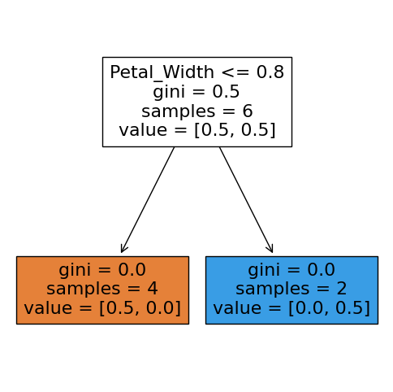
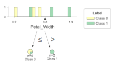
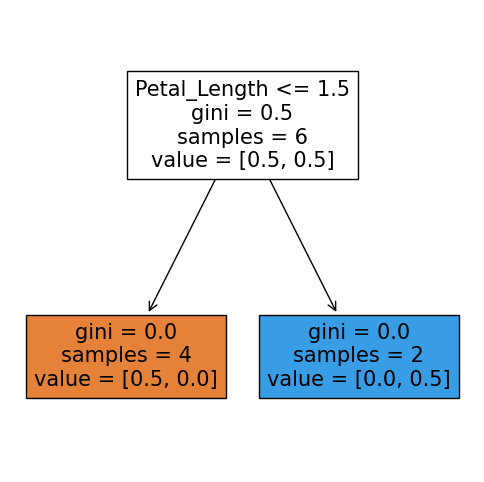

Ada Boost#
Tạo ra cây Strump có độ sâu = 1
Chọn 1 feature tốt nhất
Học dựa trên lỗi sai
Khuếch đại feature sai lên để tăng xác xuất từ các lần trước đó
Lấy kết quả sai số từ lần huấn luyện n-1 để làm bộ dữ liệu mới trong lần huấn luyên thứ n.
Các lần huấn luyện dựa trên cùng 1 loại giải thuật
import numpy as np
from sklearn.ensemble import AdaBoostClassifier
from sklearn import tree
import matplotlib.pyplot as plt
import pandas as pd
# load data
data = pd.read_csv('../sources/iris_2D(1).csv')
# get x
x_data = data[['Petal_Length', 'Petal_Width']].to_numpy()
x_data = x_data.reshape(6, 2)
print(x_data)
[[1. 0.2]
[1.3 0.6]
[0.9 0.7]
[1.7 0.5]
[1.8 0.9]
[1.2 1.3]]
y_train = np.array([0, 0, 0, 1, 1, 1])
print(y_train)
[0 0 0 1 1 1]
dt_classifier = AdaBoostClassifier(n_estimators=3,
random_state=0)
dt_classifier.fit(x_data, y_train)
C:\Users\vanna\.conda\envs\.env\Lib\site-packages\sklearn\ensemble\_weight_boosting.py:519: FutureWarning: The SAMME.R algorithm (the default) is deprecated and will be removed in 1.6. Use the SAMME algorithm to circumvent this warning.
warnings.warn(
AdaBoostClassifier(n_estimators=3, random_state=0)In a Jupyter environment, please rerun this cell to show the HTML representation or trust the notebook.
On GitHub, the HTML representation is unable to render, please try loading this page with nbviewer.org.
AdaBoostClassifier(n_estimators=3, random_state=0)
dt_classifier.predict(np.array([[2.7, 0.8]]))
array([1])
plt.figure(figsize=(6,6))
_ = tree.plot_tree(dt_classifier.estimators_[0],
feature_names=['Petal_Length', 'Petal_Width'],
filled=True)

import dtreeviz
viz_model = dtreeviz.model(dt_classifier.estimators_[0],
X_train=x_data, y_train=y_train,
feature_names=['Petal_Length', 'Petal_Width'],
target_name='Label')
viz_model.view()

plt.figure(figsize=(6,6))
_ = tree.plot_tree(dt_classifier.estimators_[1],
feature_names=['Petal_Length', 'Petal_Width'],
filled=True)

import dtreeviz
viz_model = dtreeviz.model(dt_classifier.estimators_[1],
X_train=x_data, y_train=y_train,
feature_names=['Petal_Length', 'Petal_Width'],
target_name='Label')
viz_model.view()

plt.figure(figsize=(6,6))
_ = tree.plot_tree(dt_classifier.estimators_[2],
feature_names=['Petal_Length', 'Petal_Width'],
filled=True)

import dtreeviz
viz_model = dtreeviz.model(dt_classifier.estimators_[2],
X_train=x_data, y_train=y_train,
feature_names=['Petal_Length', 'Petal_Width'],
target_name='Label')
viz_model.view()
Theory#
# Imports
import numpy as np
import pandas as pd
from sklearn.tree import DecisionTreeClassifier
# Helper functions
def compute_error(y, y_pred, w_i):
'''
Calculate the error rate of a weak classifier m. Arguments:
y: actual target value
y_pred: predicted value by weak classifier
w_i: individual weights for each observation
Note that all arrays should be the same length
'''
return (sum(w_i * (np.not_equal(y, y_pred)).astype(int)))/sum(w_i)
def compute_alpha(error):
'''
Calculate the weight of a weak classifier m in the majority vote of the final classifier. This is called
alpha in chapter 10.1 of The Elements of Statistical Learning. Arguments:
error: error rate from weak classifier m
'''
espilon = 0.01
return np.log((1 - error + espilon) / (error+espilon))
def update_weights_formular1(w_i, alpha, y, y_pred):
result = w_i * np.exp(-alpha * y * y_pred)
w_norm = result / np.sum(result)
return w_norm
def update_weights_formular2(w_i, alpha, y, y_pred):
result = w_i * np.exp(alpha * (
np.not_equal(y, y_pred)).astype(int))
w_norm = result / np.sum(result)
return w_norm
# Define AdaBoost class
class AIVNAdaBoost:
def __init__(self):
# self.w_i = None
self.alphas = []
self.G_M = []
self.M = None
self.training_errors = []
self.prediction_errors = []
def fit(self, X, y, M = 100):
'''
Fit model. Arguments:
X: independent variables
y: target variable
M: number of boosting rounds. Default is 100
'''
# Clear before calling
self.alphas = []
self.training_errors = []
self.M = M
# Iterate over M weak classifiers
for m in range(0, M):
# Set weights for current boosting iteration
if m == 0:
w_i = np.ones(len(y)) * 1 / len(y) # At m = 0, weights are all the same and equal to 1 / N
else:
w_i = update_weights_formular2(w_i, alpha_m, y, y_pred)
# w_i = update_weights_formular1(w_i, alpha_m, y, y_pred)
# print(w_i)
# (a) Fit weak classifier and predict labels
G_m = DecisionTreeClassifier(max_depth = 1) # Stump: Two terminal-node classification tree
G_m.fit(X, y, sample_weight = w_i)
y_pred = G_m.predict(X)
self.G_M.append(G_m) # Save to list of weak classifiers
# (b) Compute error
error_m = compute_error(y, y_pred, w_i)
self.training_errors.append(error_m)
# print(error_m)
# (c) Compute alpha
alpha_m = compute_alpha(error_m)
self.alphas.append(alpha_m)
# print(alpha_m)
assert len(self.G_M) == len(self.alphas)
def predict(self, X):
'''
Predict using fitted model. Arguments:
X: independent variables
'''
# Initialise dataframe with weak predictions for each observation
weak_preds = pd.DataFrame(index = range(len(X)), columns = range(self.M))
# Predict class label for each weak classifier, weighted by alpha_m
for m in range(self.M):
y_pred_m = self.G_M[m].predict(X) * self.alphas[m]
#weak_preds.iloc[:,m] = y_pred_m
weak_preds[weak_preds.columns[m]] = y_pred_m
# Estimate final predictions
y_pred = (1 * np.sign(weak_preds.T.sum())).astype(int)
return y_pred
def error_rates(self, X, y):
'''
Get the error rates of each weak classifier. Arguments:
X: independent variables
y: target variables associated to X
'''
self.prediction_errors = [] # Clear before calling
# Predict class label for each weak classifier
for m in range(self.M):
y_pred_m = self.G_M[m].predict(X)
error_m = compute_error(y = y, y_pred = y_pred_m, w_i = np.ones(len(y)))
self.prediction_errors.append(error_m)
result = [0.07, 0.07, 0.07, 0.22, 0.07, 0.07, 0.07, 0.22]
w_norm = result / np.sum(result)
print(w_norm)
[0.08139535 0.08139535 0.08139535 0.25581395 0.08139535 0.08139535
0.08139535 0.25581395]
# Imports
import numpy as np
import pandas as pd
import seaborn as sns
import matplotlib.pyplot as plt
from sklearn.datasets import make_classification
from sklearn.metrics import accuracy_score
from sklearn.model_selection import train_test_split
from sklearn.ensemble import AdaBoostClassifier
#Prepare dataset
X, y = make_classification(n_samples= 1000, n_features = 20, random_state = 42)
y = y * 2 - 1 # Original AdaBoost uses {1, -1} as class labels
# Train/test split
X_train, X_test, y_train, y_test = train_test_split(X, y, test_size = 0.2, random_state = 42)
#Prepare spam dataset
df = pd.read_csv('../sources/spambase.data', header = None)
names = pd.read_csv('../sources/spambase.names', sep = ':', skiprows=range(0, 33), header = None)
col_names = list(names[0])
col_names.append('Spam')
df.columns = col_names
df.head()
df['Spam'] = df['Spam'] * 2 - 1
X_train, X_test, y_train, y_test = train_test_split(df.drop(columns = 'Spam').values, df['Spam'].values, test_size = 0.2, random_state = 2)
# Fit model
ab = AIVNAdaBoost()
ab.fit(X_train, y_train, M = 50)
# Predict on test set
y_pred = ab.predict(X_test)
print('The accuracy_score of the model is:', round(accuracy_score(y_test, y_pred), 4))
The accuracy_score of the model is: 0.9349
Using the Library Scikit-Learn implementation of AdaBoost#
from sklearn.ensemble import AdaBoostClassifier
ab_sk = AdaBoostClassifier(n_estimators = 50)
ab_sk.fit(X_train, y_train)
y_pred_sk = ab_sk.predict(X_test)
print('The accuracy_score of the model is:', round(accuracy_score(y_test, y_pred_sk), 4))
C:\Users\vanna\.conda\envs\.env\Lib\site-packages\sklearn\ensemble\_weight_boosting.py:519: FutureWarning: The SAMME.R algorithm (the default) is deprecated and will be removed in 1.6. Use the SAMME algorithm to circumvent this warning.
The accuracy_score of the model is: 0.9435